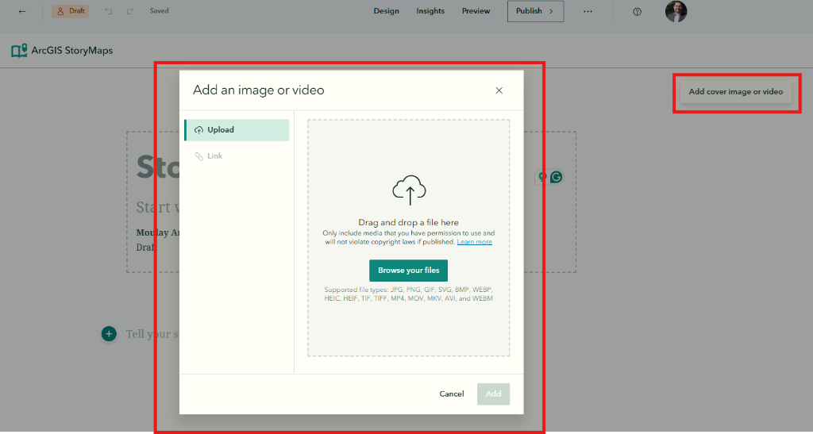
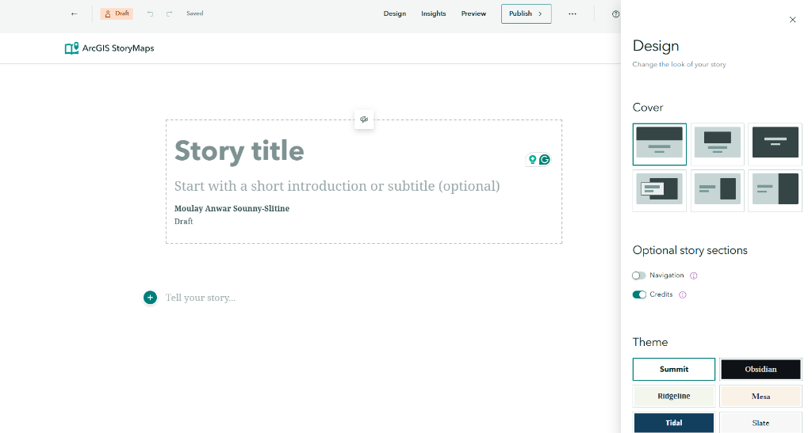

Build Your First StoryMap
Apply geographic thinking to create an interactive map-based narrative about a meaningful place. Follow along step-by-step to practice spatial storytelling.
🎯 What You'll Build
A geographic story map featuring a meaningful location, demonstrating how to:
- Frame a place through compelling narrative
- Integrate geographic context and location details
- Embed interactive maps that reveal spatial relationships
- Combine visual media with spatial information
📋 Before You Start
Make sure you have:
- ✓ An ESRI account (Module 01)
- ✓ Basic platform knowledge (Module 02)
- ✓ Photos or images of your chosen place
- ✓ Geographic details: coordinates, boundaries, characteristics
- ✓ A 2-3 paragraph story explaining why this place matters
🌍 Geographic Learning
This lab helps you develop:
- ✓ Place-based thinking skills
- ✓ Spatial communication ability
- ✓ Geospatial storytelling expertise
- ✓ Capacity to connect place to narrative
⚖️ Evaluation Criteria
Your StoryMap will be evaluated on:
- ✓ Narrative Arc: Compelling introduction and conclusion
- ✓ Map Integration: Effective use of maps to support text
- ✓ Media Quality: High-res images with proper sourcing
- ✓ Geographic Depth: Clear spatial analysis or insight
📚 Recommended Reading
Before diving into the builder, we highly recommend reviewing this official guide from the StoryMaps team. It provides excellent context on how to structure your narrative.
Open GuideChoose Your Topic
5 minutesGeographic Question: Every place has a unique story shaped by its location, history, environment, and people. Choose a meaningful location and consider what geographic insights you can share about it.
Map the itinerary for your perfect trip.
- Where would you go?
- What landmarks would you visit?
- Show the route between cities or attractions.
A guide to your favorite food spots.
- Map the best pizza, tacos, or coffee.
- Add photos of the food.
- Rate each spot in the description.
Tour a local park or hiking trail.
- Map the trailheads and key viewpoints.
- Show where to park.
- Highlight specific plants or statues.
Show us where you're from.
- Map your high school, favorite hangout, and home.
- Share stories about growing up there.
- Explain what makes it unique.
📝 Geographic Planning Guide:
Before you start building, answer these geographic questions:
- Location: Where exactly is this place? (latitude/longitude, region, country, context)
- Why it matters geographically: What makes this place significant? (unique features, cultural importance, environmental value, historical role)
- Key geographic characteristics: What should readers understand about its location, landscape, climate, or people? (3-5 details)
- Geographic story: What spatial relationships or patterns does your story reveal?
- Geographic evidence: What maps, data, images, or sources will show what you're explaining?
Create a New Story
2 minutesThere are two ways to start a new story. Choose the one that works best for where you currently are in the platform.
Method A: Direct Builder Access (Fastest)
- Go directly to builder: To Creator →
- Sign in with your ESRI account.
- Click "New story" (big button).
- Select "Start from scratch".
Method B: From Your Dashboard
If you are on the StoryMaps home page:
- Click "Create" in the top header.
- Select "Story" from the dropdown menu.
- Choose "Start from scratch".

Think of arcgis.com as your "digital drive." It's where your StoryMap, any maps you make, and uploaded assets are securely stored. Even if you edit in the StoryMaps builder, everything lives in your ArcGIS Content.
Design Your Cover
5 minutesThe cover is the first impression. Let's make it count!
- Click on the cover block to edit it
-
Add a background:
- Click "Add image or video"
- Upload one of your photos (choose your best one!)
- Or select "Browse" to use a stock image
 -
Add your title:
- Click "Add title"
- Type a compelling title (keep it short!)
- Example: "Discovering Austin's Hidden Gems"
-
Add a subtitle:
- Click "Add subtitle"
- Briefly describe your story
- Example: "A local's guide to the best spots in Texas' capital"
💡 Pro Tips for Great Covers:
- Use landscape-oriented images (wider than tall)
- Avoid busy images that compete with text
- Ensure good contrast between image and title
- Keep titles under 8 words
- Unsplash.com: Excellent source for free, high-quality stock photography.
- AI Generation: Try using tools like Gemini or Nanobanana to generate a custom image if you have a specific vision!
Cover images are always cropped to fit different screen sizes (mobile vs. desktop). It is impossible to show the entire image on every device.
How to fix it:
- Avoid "Safe Zones": Don't put text or vital details on the very edges of your photo.
- Set the Focal Point: Click the "gear" or "focal point" icon on your image to tell StoryMaps which part must always remain visible.
- Recommended Ratios: Use landscape images with 3:2 or 16:9 aspect ratios for best results.
Add Your Introduction
5 minutesAfter the cover, hook your readers with an engaging introduction.
- Click the "+" button below the cover
- Select "Text" from the menu
-
Add a heading:
- Type your section title
- Highlight it and select "Heading 1" from the format menu
-
Write your introduction:
- 1-2 paragraphs explaining your place
- Why does this place matter?
- What will readers discover?
📄 Example Introduction:
Welcome to Zilker Park
Nestled in the heart of Austin, Texas, Zilker Park is more than just green space - it's the city's outdoor living room. From the natural spring-fed Barton Springs Pool to panoramic views of the downtown skyline, this 350-acre urban oasis offers something for everyone.
In this story, I'll take you on a journey through my favorite spots in this beloved park.
Add an Express Map
8 minutesNow let's add the geographic heart of your story—an interactive map!
- Click the "+" button to add a new block
- Select "Map" from the menu
-
Choose "Express map"
(This is the built-in map maker - perfect for quick maps)
-
Search for your location:
- Type your place name in the search bar
- Press Enter or click the search result
- The map will zoom to that location
-
Add a point marker:
- Click the "Add" button
- Select "Add point"
- Click on the map where you want the marker
- Add a title and description in the popup
-
Customize your marker:
- Change the icon (pin, star, etc.)
- Adjust the color
- Add an image to the popup if desired
- Click "Place map" when finished
• Numbered points (1, 2, 3...) for sequential tour stops
• Lines for routes and paths
• Freehand drawing for custom shapes
• Arrows to show direction or highlight areas
• Text annotations to label map features
📝 Stretch Goal:
Add 2-3 more point markers to highlight different features of your location. Connect them with a line if they form a route or path!
Add More Content Blocks
5 minutesFlesh out your story with additional content. Try adding at least two more blocks:
📝 Suggested Structure:
- Cover (done)
- Introduction text (done)
- Map (done)
- Image with caption
- More descriptive text
- Another image or quote
- Closing text with call-to-action
Apply a Theme
3 minutesGive your story a polished look by applying a theme:
- Click "Design" in the top header bar.
-
Explore the Design Panel:

- Cover Layout: Choose how your title and image overlap (Full, Side-by-Side, or Minimal).
- Navigation: Toggle "Navigation" ON to automatically create a table of contents from your Headings.
- Theme: Select a pre-made value (Summit, Obsidian, Tidal, etc.) to instantly change fonts and colors.
- Select a theme that fits your story's mood!
💡 Make It Yours (Don't Stick to Defaults!):
- Avoid the Default: Changing the theme is the easiest way to make your story stand out. The default theme is functional, but customizing it shows you care about design.
- Match the Mood: Use "Obsidian" for space/night topics, or "Tidal" for water/clean topics.
- Test Different Covers: Try the "Side-by-Side" layout; it often looks more professional than the standard full screen.
Preview and Publish
5 minutesTime to see your story as readers will experience it! Don't skip this step.
- Click "Preview" in the top-right corner.
-
Use Multi-Device Preview:
Use the floating toolbar to check responsiveness:
- Desktop: Check the wide-screen layout.
- Tablet: Ensure sidecars and images display well.
- Phone: Critical Check! Ensure your cover image isn't cropped awkwardly and text is readable.
-
Polish Your Story Card:
Before publishing, go to Story settings > Story card.
- Thumbnail: Upload a clean image (this is what people see on social media).
- Summary: Write a 1-sentence hook.
- Tags: Add "Geographic Storytelling" and your topic.
-
Click "Publish" when ready:
- Set sharing to "Everyone (Public)" so we can review it.
- Click "Publish" to go live.
Once published, copy the URL from your browser address bar (it should act look like
storymaps.arcgis.com/stories/...).
Paste this link into the Canvas assignment submission box to complete the lab!
💡 Updates & Edits:
Found a typo after publishing? No problem! You can edit your story anytime. The live link won't change until you click "Publish" again. Watch for the "Unpublished Changes" badge in the builder.
✅ Lab Completion Checklist
Make sure your StoryMap includes: